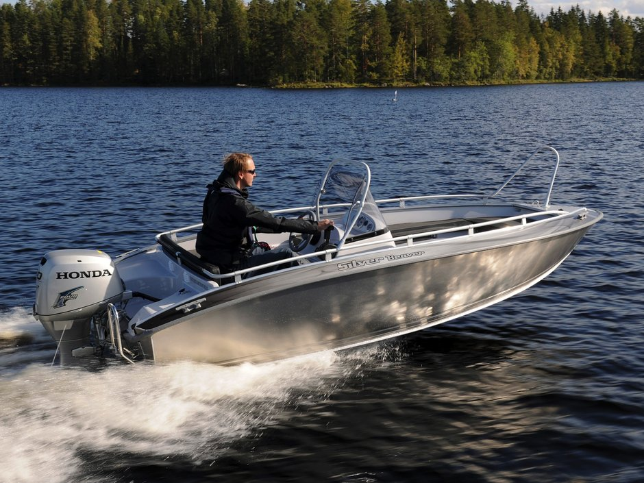

Катер Silver Beaver (Сильвер Бивер)
Silver Beaver (Сильвер Бивер) - отличный катер, стандартная оснастка которого дополнена небольшими, но крайне важными для знатока деталями. Стандартное оснащение катера Silver Beaver включает удобные запирающиеся хранилища с крышками, которые расположены на корме, в носовой части и по бортам катера. Также катер оснащен поручнем, который поможет в плаванье по волнам и при высадке на берег. К тому же, ветровое стекло и насос для откачки воды входят в объем стандартной оснастки. Благодаря сверхпрочному алюминиевому корпусу, Вы сможете спокойно преодолевать большие волны.
Silver Beaver (Сильвер Бивер) или "бобр" спроектирован для больших нагрузки обладает соответствующими характеристиками. Одновременно, при желании, на нем можно просто плавно скользить по водной глади. Поездки на дачу, рыбалка, небольшие прогулки в одиночку или в компании - существует много способов наслаждаться замечательными качествами Вашего катера. Не стоит лишний раз напоминать, что бобр есть бобр: он создан для того, чтобы плавать в воде и легко выбираться на берег. Silver Beaver (Сильвер Бивер) - простота и надежность!
Технические характеристики катера:
| Параметр | Silver Beaver |
|
Длина |
4.50 м |
|
Максимальная ширина |
1.81 м |
|
Масса |
300 кг |
|
Рекоменд. мощность двигателя |
25-40 л/с |
|
Кол-во пассажиров |
5 человек |
Стандартное оборудование:
- ходовые огни, якорный огонь;
- чехол для аккумулятора с кабелями;
- распределительная панель с предохранителями;
- соответствующая нормам ЕС конструкция, открытое помещение со сливом воды;
- пульт управления;
- рулевое управление;
- выключатель массы;
- ящик для хранения мелких вещей;
- огнетушитель;
- электрическая помпа для откачки воды из трюма;
- напряжение бортовой сети 12 В;
Дополнительное оборудование
Комплект мягких подушек на сиденья,
Транспортировочный тент,
Ходовой тент
Silver Beaver - многопрофильный катер, который подходит и для прогулок, и для рыбной ловли. Оборудованные места для двух топливных баков позволяют, следуя минутному желанию, совершать длительные однодневные путешествия. В просторном катере Beaver могут удобно расположиться пять человек. По своим ходовым качествам и организации пространства катер - типичный представитель семейства катеров Silver, удобный и простой в использовании. Кроме того, что особенно важно во время отпуска, катера Silver не требуют ухода и сервисного обслуживания благодаря изготовленному из особого морского алюминия корпусу и внутреннему элементу из армированного стеклопластика. Эта оригинальная комбинация объединяет прочность алюминиевых катеров и комфортабельность катеров из стекловолокна.

{kind=link}
{kind=link}
{kind=link}
{kind=link}
{kind=link}
{kind=link}
{kind=link}
{kind=link}